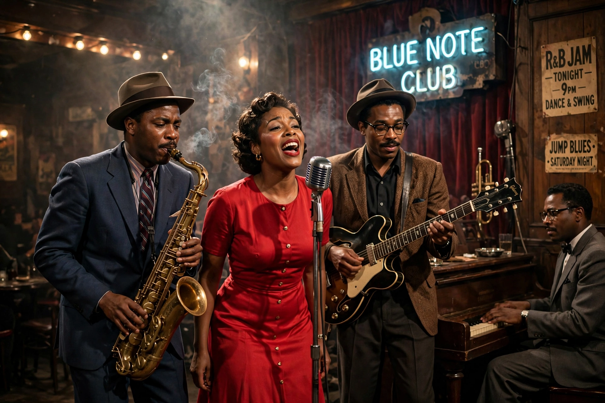

Rhythm and blues, frequently abbreviated as R&B, is a genre of popular music that originated in African-American communities in the 1940s. The term was coined by Jerry Wexler at Billboard in 1948 as a marketing label replacing "race music", initially for uptempo blues with strong backbeat, jazz and gospel influences.

| Stylistic origins | Blues, jazz, gospel |
|---|---|
| Cultural origins | 1940s, United States |
| Derivative forms | Rock and roll, soul, funk |
Early R&B artists included Louis Jordan, Wynonie Harris, Ruth Brown and Ray Charles. In the 1950s it fed directly into rock and roll; in the 1960s it evolved into soul and Motown sounds; later decades produced contemporary R&B — smooth, electronic, hip-hop-influenced styles of artists from Whitney Houston and Mariah Carey to Beyoncé, Usher and The Weeknd.
Typical features include 12-bar blues forms, call-and-response, expressive vocals and emphasis on rhythm section groove.